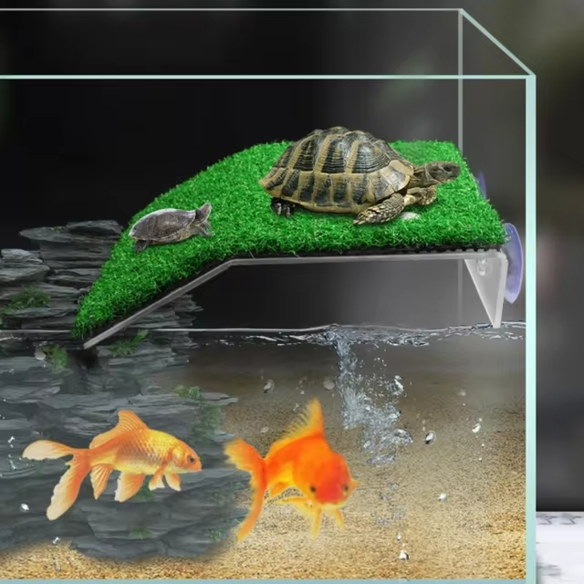
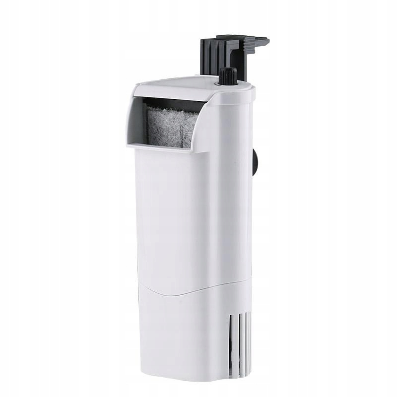
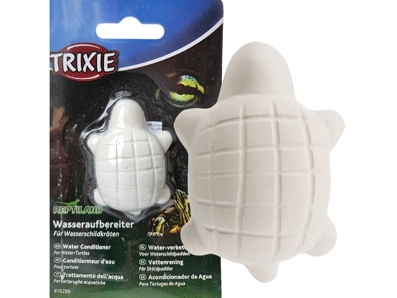
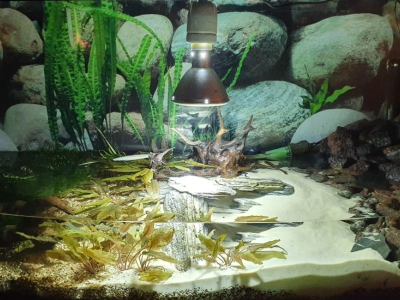
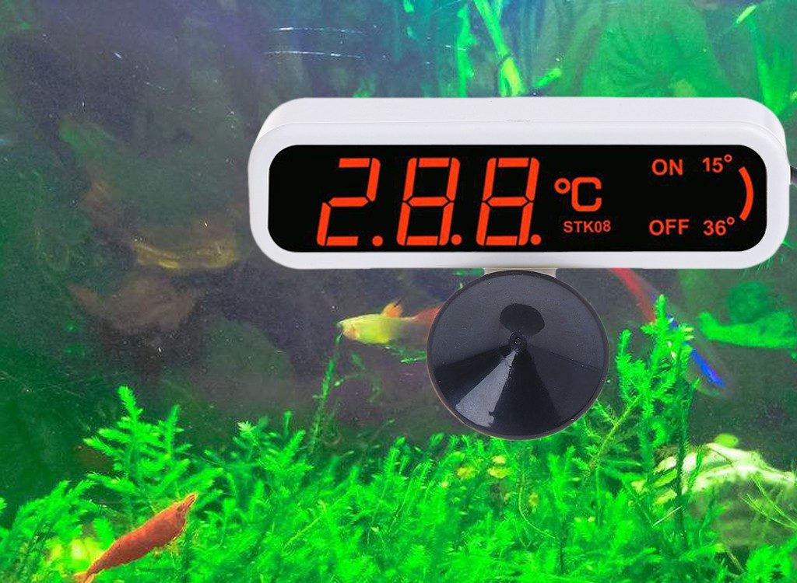
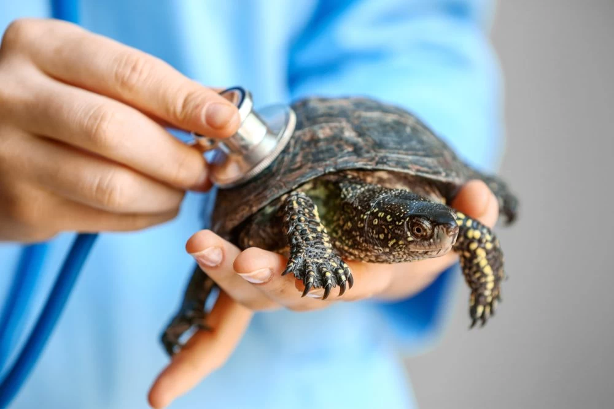
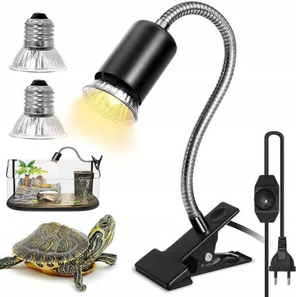

HODOWLA ŻÓŁWIA WODNEGO
Wszystko, co musisz wiedzieć o opiece nad żółwiem wodnym
Hodowla żółwi wodnych to popularne hobby, które może dostarczyć wiele radości, ale wymaga odpowiedniego przygotowania. Żółwie wodne to zwierzęta, które potrzebują specyficznych warunków, aby zdrowo się rozwijać i cieszyć długim życiem. Jeśli chcesz zapewnić swojemu pupilowi komfort i dobre zdrowie, musisz zadbać o kilka kluczowych aspektów.
O co należy zadbać przy hodowli żółwia wodnego:
-

- Odpowiednie akwarium
- Rozmiar: Dla małych żółwi wodnych akwarium o pojemności co najmniej 100-150 litrów jest odpowiednie, ale im większe, tym lepiej. Żółwie potrzebują przestrzeni do pływania.
- Wyspa do wygrzewania: Żółwie wodne potrzebują miejsca, gdzie mogą wychodzić z wody i wygrzewać się pod lampą. Może to być platforma lub skała, która wystaje nad powierzchnię wody.
- Wysokość wody: Woda powinna być na tyle głęboka, aby żółw mógł swobodnie pływać, ale nie za głęboka, żeby mógł się bez problemu wynurzać na powierzchnię.
- Oświetlenie i temperatura
- Lampa UVB: Żółwie wodne potrzebują światła UVB, aby syntetyzować witaminę D3, która jest niezbędna do przyswajania wapnia. Lampę UVB należy umieścić nad wyspą wygrzewania.
- Lampa grzewcza: Na wyspie wygrzewania powinna być także lampa grzewcza, która utrzyma temperaturę od 30 do 35°C.
- Temperatura wody: Optymalna temperatura wody powinna wynosić około 24-28°C. W chłodniejszych klimatach warto użyć grzałki do akwarium z termostatem.
 - Filtracja i jakość wody
- Filtr: Żółwie wodne produkują sporo odchodów, więc wydajny filtr akwariowy jest kluczowy do utrzymania czystej wody. Filtr zewnętrzny o dużej mocy będzie najlepszy.
- Regularne wymiany wody: Nawet przy dobrym filtrze, wymiany części wody są niezbędne, aby zapobiegać gromadzeniu się toksyn. Zaleca się wymianę 20-30% wody co tydzień.
- Testowanie wody: Regularne testowanie parametrów wody (np. pH, twardość, poziom amoniaku) może pomóc w utrzymaniu zdrowego środowiska.
 - Dieta
- Różnorodność: Żółwie wodne są wszystkożerne, więc ich dieta powinna być zróżnicowana. Możesz karmić je specjalnymi granulkami dla żółwi, rybami, owocami morza, owadami, a także roślinami wodnymi.
- Pokarmy roślinne: Dorosłe żółwie potrzebują większej ilości pokarmów roślinnych, takich jak liście sałaty, mlecze czy glony.
- Suplementacja: Dodawanie suplementów wapnia (np. kostka wapniowa) jest ważne dla zdrowego rozwoju skorupy.
 - Higiena i zdrowie
- Czystość akwarium: Regularnie usuwaj resztki jedzenia i odchody, aby zapobiec rozwijaniu się bakterii.
- Oględziny zdrowotne: Obserwuj swojego żółwia pod kątem zmian w zachowaniu, apetytu oraz wyglądzie jego skorupy i oczu. Wszelkie oznaki infekcji, puchnięcia lub zmiany koloru wymagają wizyty u weterynarza.

- Interakcja i bezpieczeństwo
- Unikaj częstego dotykania: Żółwie wodne mogą być zestresowane, jeśli są często dotykane. Staraj się unikać częstego wyjmowania ich z akwarium, chyba że jest to konieczne.
- Zabezpieczenie akwarium: Upewnij się, że akwarium jest dobrze przykryte, aby żółw nie mógł uciec.
 - Temperatura otoczenia i wilgotność
- Wilgotność: Choć żółwie wodne spędzają większość czasu w wodzie, ważne jest utrzymanie odpowiedniej wilgotności w otoczeniu akwarium.
- Odpowiednia cyrkulacja powietrza: Zapewnij dobrą wentylację w pobliżu akwarium, aby uniknąć kondensacji i rozwijania się pleśni.
 - Zdrowie i wizyty u weterynarza
- Regularnie kontroluj stan zdrowia swojego żółwia i w razie jakichkolwiek problemów skontaktuj się z weterynarzem specjalizującym się w gadach.
